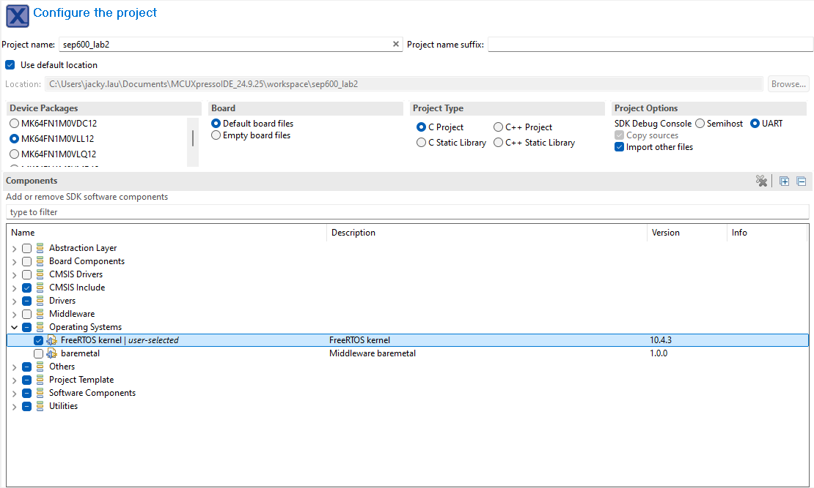

Lab 2: Comparator and Digital I/O
Introduction
This lab expands on your knowledge of embedded I/O by interfacing analog circuits (comparators) with digital logic. You will transition from basic GPIO toggling to reading external digital states and generating Pulse Width Modulation (PWM) signals.
Learning Objectives
- Construct and analyze Op-Amp comparator circuits and Pull-Up/Pull-Down resistor configurations.
- Configure GPIO for inputs and outputs.
- Implement Pulse Width Modulation (PWM) using hardware timers (FlexTimer Module - FTM).
Documentation for the Cortex-M4 instruction set, board user's guide, and the microcontroller reference manual can be found here:
- FRDM-K64F Freedom Module User’s Guide (PDF)
- Kinetis K64 Reference Manual (PDF)
- FRDM-K64F Mbed Reference
- FRDM-K64F Mbed Pin Names
- FRDM-K66F Freedom Module User’s Guide (PDF)
- Kinetis K66 Reference Manual (PDF)
- FRDM-K66F Mbed Reference
- FRDM-K66F Mbed Pin Names
Documentation for the Cortex-M4 instruction set can be found here:
- Arm Cortex-M4 Processor Technical Reference Manual Revision (PDF)
- ARMv7-M Architecture Reference Manual (PDF)
Comparator
An operational amplifier (op-amp) can be used as a comparator, a device that compares two input voltages and outputs a signal based on which input is higher. In this configuration, the op-amp operates in open-loop mode, meaning there is no feedback loop, allowing it to function as a high-gain amplifier. When the non-inverting input voltage exceeds the inverting input voltage, the output swings to one extreme (positive saturation). Conversely, when the inverting input voltage exceeds the non-inverting input, the output swings to the other extreme (negative saturation).
- when \(V_{in+} > V_{in-}\), the output saturates to the positive supply rail (High)
- when \(V_{in-} > V_{in+}\), the output saturates to the negative supply rail or ground (Low).
This sharp transition between high and low states makes op-amp comparators ideal for digital signal processing, threshold detection, and square wave generation. They are widely used in applications such as zero-crossing detectors, overcurrent protection circuits, and pulse-width modulation.

Figure 2.1 Comparator
Materials
- Safety glasses (PPE)
- FRDM-K64F or FRDM-K66F microcontroller board
- Breadboard
- Jumper wires
- (1x) Op-Amp (LM358, LM324, or similar)
- Various 1kΩ-10kΩ resistors
- (2x) Buttons or switches
- (1x) Potentiometer (Optional)
Preparation
- Read through the lab manual for this lab.
- Ensure you have all the necessary materials for this lab.
- Review how to use an Oscilloscope (DSO).
Procedures
Part 1: Comparator and Digital Input
-
Assemble the circuit shown in Figure 2.2 on your breadboard.

Figure 2.2 Comparator Circuit to MCU
- Use the microcontroller's 3.3V and GND pins to power the Op-Amp. Refer to your Op-Amp's datasheet for pinout.
- Calculation: Select \(R_1\) and \(R_2\) such that the reference voltage (\(V_{ref}\) or Inverting Input (\(V_{in-}\))) is approximately 2.0V. Formula: \(V_{ref} = V_{cc} \times \frac{R_2}{R_1 + R_2}\).
Info
Keep in mind that the power rating for a typical through-hole resistor is 0.25W. Double-check the maximum power rating of the resistor you are using to select the appropriate resistance value. Formula: \(P = IV\).
-
Connect a variable power supply (or a potentiometer output) to the Non-Inverting Input (\(V_{in+}\)) of the Op-Amp.
Tip
It is always a good idea to validate your circuit's output using a multimeter before connecting it to a microcontroller to prevent damage. The Op-Amp output should be between 0-1.0V when it's in the low state and 2.3-3.3V when it's in the high state. How close the output can get to 0V (negative rail) and 3.3V (positive rail) will depend on the model of the Op-Amp.
-
Connect the Op-Amp output to a GPIO pin on your board (e.g., PTC12, PTA1, etc.). All numbered pins (PTXXX) can be used for GPIO. However, it is good practice not to use a pin that can be used for other purposes (e.g., PWM, UART, I2C, etc.) for simple digital input and output.

Figure 2.3: FRDM-K64F Header Pinout from FRDM-K64F Mbed Reference.
For FRDM-K66F, refer to the FRDM-K66F Mbed Reference.
Note
Ensure the Op-Amp ground, Power Supply ground, and Microcontroller ground are all connected to a common ground reference voltage.
-
Start a new C/C++ project in MCUXpresso, but this time, change the Operating Systems to "FreeRTOS kernel" in the Components list. You can name the project "sep600_lab2".

Figure 2.4: Creating a FreeRTOS project in MCUXpresso.
-
Open
sep600_lab2.cor the main project C code file and add the following to it:FreeRTOS header files:
#include "FreeRTOS.h" #include "task.h" #include "queue.h" #include "timers.h"Add the task priorities and prototype for
vTaskFunction():#define vTaskFunction_PRIORITY (configMAX_PRIORITIES - 1) static void vTaskFunction(void *pvParameters);Replace "Hello World" with "SEP600 Lab 2 Start":
PRINTF("SEP600 Lab 2 Start\r\n");Replace the
int ivariable and thewhile(1)loop with the following task creation logic:if (xTaskCreate(vTaskFunction, "vTaskFunction", configMINIMAL_STACK_SIZE + 100, NULL, vTaskFunction_PRIORITY, NULL) != pdPASS) { PRINTF("Task creation failed!.\r\n"); while (1) ; } vTaskStartScheduler(); for (;;) ;Add the
vTaskFunction()function to the end of your code:static void vTaskFunction(void *pvParameters) { for (;;) { PRINTF("SEP600 Lab 2 is Cool!\r\n"); vTaskDelay(pdMS_TO_TICKS(1000)); } }Build, Flash, Run and you should see a similar printout in the serial terminal. What you have now will act as the starter code for a FreeRTOS project for all the other labs.
-
Let's program a pin on the microcontroller board to read the comparator input that triggers the Red LED.
Define the GPIO pin used to read the comparator output (Example: PTC6 = Port C, Pin 6):
// replace all the X depending on the pin you used for the comparator #define COMPARATOR_GPIO GPIOX // replace X with A, B, C, etc. #define COMPARATOR_PORT PORTX // replace X with A, B, C, etc. #define COMPARATOR_PIN XU // replace X with 1, 2, 3, etc.Use the Config Tools Wizard or add the following to
main()to initialize the LED pins:BOARD_InitLEDsPins()Use the Config Tools Wizard or add the following to
main()to initialize the comparator pin:// replace the X depending on the pin you used for the comparator CLOCK_EnableClock(kCLOCK_PortX); // replace X with A, B, C, etc. // Comparator gpio_pin_config_t comparator_config = { kGPIO_DigitalInput, 0, }; GPIO_PinInit(COMPARATOR_GPIO, COMPARATOR_PIN, &comparator_config); port_pin_config_t comparator_pin_config = {kPORT_PullDisable, kPORT_FastSlewRate, kPORT_PassiveFilterDisable, kPORT_OpenDrainDisable, kPORT_LowDriveStrength, kPORT_MuxAsGpio, kPORT_UnlockRegister}; PORT_SetPinConfig(COMPARATOR_PORT, COMPARATOR_PIN, &comparator_pin_config);Read the comparator input and trigger the Red LED. Replace the
for (;;)loop invTaskFunction()with:for (;;) { if (GPIO_PinRead(COMPARATOR_GPIO, COMPARATOR_PIN) == 1) { GPIO_PortClear(BOARD_LED_RED_GPIO, 1U << BOARD_LED_RED_PIN); // Turn Red LED ON } else { GPIO_PortSet(BOARD_LED_RED_GPIO, 1U << BOARD_LED_RED_PIN); // Turn Red LED OFF } vTaskDelay(pdMS_TO_TICKS(50)); // Small delay to prevent CPU hogging } -
Build, Flash, Run, then set the power supply output to 0V and turn on the power supply. Did the red LED turn ON or OFF?
-
Raise the power supply voltage to 3.3V. Did the red LED turn ON or OFF now?
Danger
Do not raise the power supply voltage higher than 5.0V
Info
Ensure you fully understand how the power supply voltage is affecting the comparator's output and how the signal is being read by the microcontroller as a digital input.
Part 2: Pull-Up and Pull-Down
-
Keep the comparator circuit. Assemble a Pull-Up switch circuit (Circuit A) using a 1kΩ (or larger) resistor and a button (or use jumper wires as a switch if you don't have a button).

Figure 2.4: (A) Pull-Up Input. (B) Pull-Down Input.
- Use the microcontroller's 3.3V and GND pins to power the Pull-Up circuit.
Tip
It is always a good idea to validate your circuit's output using a multimeter before connecting it to a microcontroller to prevent damage. The middle node of the Pull-Up circuit should be between 0V-3.3V depending on whether the button is pressed.
-
Connect the middle node of the Pull-Up circuit to another GPIO input pin on the microcontroller.
- Calculation: What is the current passing through the resistor when the switch is closed? Is this a safe current for the 0.25W resistor? How can you modify the circuit to reduce its energy consumption?
-
Modify the code from Part 1 to initialize the new pull-up button using
GPIO_PinInitandPORT_SetPinConfig(similar to the comparator pin). -
Modify the logic within
vTaskFunction()so the red LED turns ON only if the comparator input from the power supply is above 2.0V AND the pull-up button is pressed.That is, the comparator input acts as the master switch for the red LED output. When the button is not pressed, the red LED should be OFF.
Tip
Use the debug tool or serial print statements to troubleshoot your logic as necessary.
-
Construct a Pull-Down switch circuit (Circuit B) and connect it to a third GPIO pin. Modify your code so the green LED turns ON only if the comparator input from the power supply is above 2.0V AND the second button (Pull-Down) is pressed. When the second button is not pressed, the green LED should be OFF. When both buttons are pressed, we should see a yellow light.
Note
Ensure you fully understand digital input and output, as well as Pull-Up and Pull-Down circuits. Experiment with the code or circuit as necessary to deepen your understanding.
Part 3: PWM Output: GenAI-assisted Development Challenge
Generating PWM is more complex than simple GPIO. It requires configuring either the Timer/PWM Module (TPM) or the FlexTimer Module (FTM). While the TPM is easier to use, FTM is more flexible and preferred.
-
Without removing the comparator, Pull-Up, and Pull-Down circuits, connect a PWM-capable pin (those with a purple PWM label in the pinout diagram) to CH1 of the DSO. Refer to the microcontroller board manual for details on pin assignments. Connect the DSO ground to the common ground of your circuit.
-
Find the associated FTM channel for the PWM-capable pin you have chosen from Section 10.3 Pinout of the Kinetis K64 Reference Manual (PDF) or Section 11.3 Pinout of the Kinetis K66 Reference Manual (PDF).
PWM-capable Pin and FTM Channel
Find the PWM pin that you are using under the "Pin Name" column, then look for "FTMx_CHx" from the ALT0-ALT7 column along the same row (e.g., PTA3 is connected to FTM0_CH0 at ALT4, meaning PTA3 can also be used for FTM0_CH0 when set to alternate mode 4).
-
Ask a GenAI agent of your choice to help you write a code snippet that generates a PWM signal at 1 kHz.
Start with this prompt
Write a C function for the FRDM-K64F running FreeRTOS using the MCUXpresso SDK to initialize FTM to output a PWM signal at 1kHz and set the duty cycle at 50%. Include the clock gating and
FTM_SetupPwmfunction call.Continue the conversation by providing the pin you are using, etc. to generate a more functional code.
-
Do not blindly copy-paste, verify the code that is generated.
- Did the code enable the clock for the proper PORT and the FTM module (
CLOCK_EnableClock)? Did you provide GenAI the FTM module and channel number? - Did the code set the
PORT_SetPinMuxto the correct "ALTx" mode for FTM? Or did it assumed you'll set it manually? (You must check the Reference Manual Signal Multiplexing table to find which ALT mode (the ALTx column number) corresponds to the FTM on your chosen pin). - Check the
FTM_SetupPwmparameters. Is the source clock frequency valid? Do you understand the parameters?
- Did the code enable the clock for the proper PORT and the FTM module (
-
Once verified, create a new function
InitPWM()using the GenAI code, then call this frommain()before the scheduler starts. -
Build, Flash, Run and take a look at the generated PWM square wave on the DSO. Adjust the DOS settings to see CH1 as a stable square wave. You might need to manually adjust the Trigger level, as well as the voltage and time division, if the Auto Scale function is not working. Does the duty cycle and the PWM frequency match the settings from
FTM_SetupPwm? -
Modify your code (using GenAI or manually) to change the PWM Duty Cycle based on the button presses.
- Button 1: Increase Duty Cycle by 10%.
- Button 2: Decrease Duty Cycle by 10%.
Use
FTM_UpdatePwmDutycycle()to change the duty cycle andFTM_SetSoftwareTrigger()to apply the duty cycle update. Refer to FTM: FlexTimer Driver for documentation on how to use these functions. -
Build, Flash, Run your program see it's effect on the DSO.
Note
Ensure you fully understand the concept of PWM.
Once you've completed all the steps above (and ONLY when you are ready, as you'll only have one opportunity to demo), ask the lab professor or instructor to verify that you've completed the lab. You may be asked to explain some of the concepts you've learned in this lab.
References
- GPIO: General Purpose I/O functions
- FTM: FlexTimer Driver
- This lab manual was generated with the help of Gemini 3 Pro.